COS426 Assignment 2Modeling — Writeup
Switch to: Interactive Editor
- (0.0) Translation
- (1.0) Rotation
- (0.5) Scale
- (1.5) Traversal
- (0.5) Face area
- (0.5) Per-vertex normals
- (0.5) Average edge lengths
- (0.5) Twist around Y
- (1.0) Inflate
- (1.0) Wacky
- (1.0) Noise
- (1.5) Smooth
- (1.0) Sharpen
- (0.5) Triangulate
- (2.0) Truncate
- (1.0) Split long edges
- (1.0) Triangle subdivision
- (1.0) Loop subdivision
- (1.0) Quad subdivision
- (1.0) Art Contest
Translation
This feature was implemented by the course staff. I used it as an example of how to loop over the vertices of a mesh.
Here is an example output where the mesh is translated by 3 along the x axis:
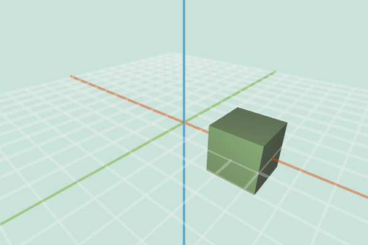
I did not encounter any particular challenges in implementing this.
Rotation
This feature rotates the object in first the x, y, then z direction depending on the given rotation value.
Here is an example where the mesh is rotated .5 in the x direction.
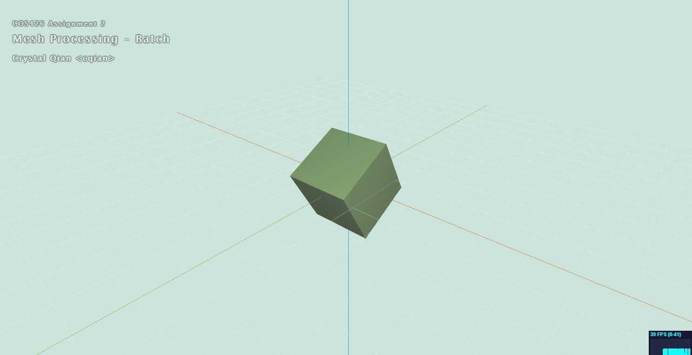Here is an example where the mesh is rotated 1 in both the y and z direction.
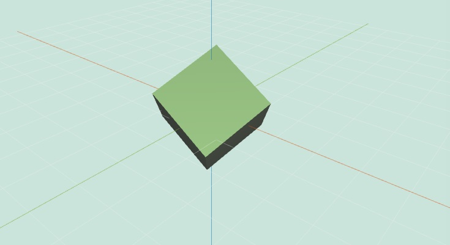This took a little bit of time since I was unaware that we could just use applyAxisAngle function.
Scale
Scale simply multiplies the position of each vertex by its given scalar factor.
Here is when it is scaled by 2.3.
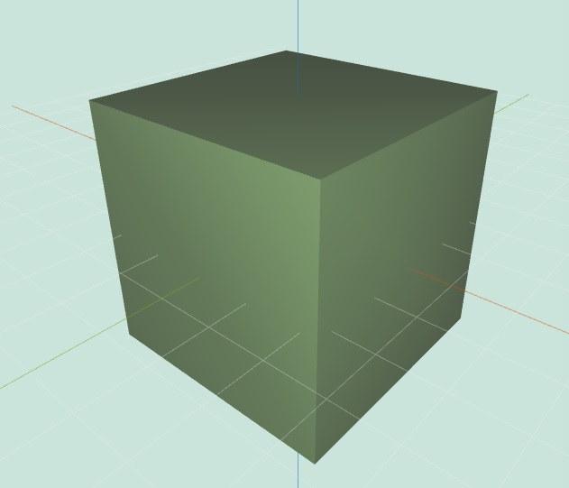Here is when it is scaled by .36.
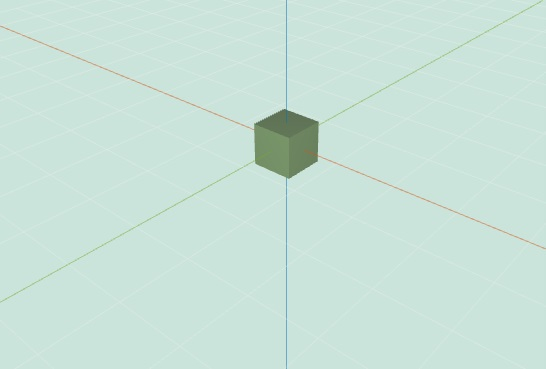Traversal
Face traversal functions
- Vertices on Face: Returns all vertices that lie on a given face. Start with the half-edge associated with the face. Push the half-edge's vertex onto an array, then follow the the half-edge's next half-edge's vertex. Follow and repeat this until the current half-edge's next is the initial half-edge (meaning we have finished a face). Return the array of vertices.
- Edges on Face: Return all edges of a given face. Same traversal method as the previous, except we push the half-edge itself rather than its vertex into the resultant array.
- Faces on Face: Return all faces that border a given face. Same traversal method as above, except we push the face associated with each half-edge traversing the current edge into the resultant array.
- Vertices on Vertex: Returns all neighboring vertices of a vertex. Pushes initial vertex. Then, pushes the vertex's half-edge's opposite's next vertex (another vertex that neighbors the initial vertex). Repeats until the current half-edge being investigated is the initial half edge.
- Edges on Vertex: Returns all faces bordering a vertex. Same traversal as above, except pushes the half-edge itself rather than the half-edge's vertex (starting with initial vertex's associated half-edge.
- Faces on Vertex: Returns all faces bordering a vertex. Same traversal as above, except pushes the half-edge's associated face rather than the half-edge itself.
- Vertices on Edge: Returns the two vertices that make up an edge. Start with the edge's associated vertex, then push the vertex of the half-edge going in the opposite direction. Repeat this (this should only occur once) until the opposite's opposite is the initial.
- Faces on Edge: Returns the two faces that are on each side of the given edge. Same traversal as above, except pushes the half-edge's face rather than vertex.
Face area
Facial area is the sum of the area of each face. For each face, triangulate and calculate the sum of all the area triangles.
Per-vertex normals
Sums and averages the normals of neighbors to get resultant vertex normal.
Average edge lengths
Average edge lengths calculates the distance from a vertex to each of its neighboring vertices, sums them, and divides by the number of neighboring vertices/edges.
Twist around Y
For each vertex, manipulate the y-value by the factor given. Here it is with factor 3.14.
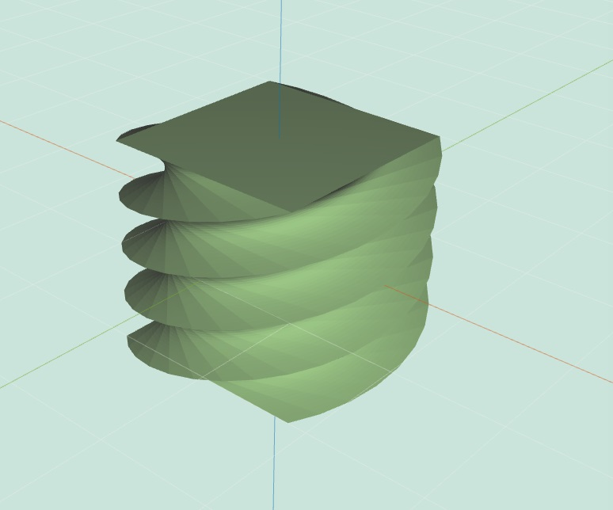 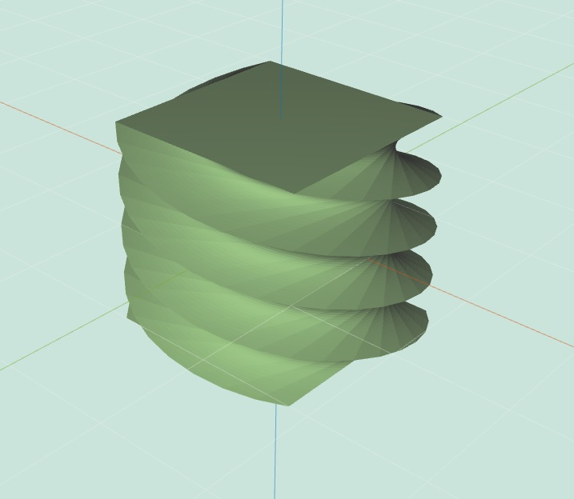Inflate
Inflate multiplies each vertex by a factor along its normal. I decided not to augment the operation by the average edge length.
Here the hand is inflated by .1.
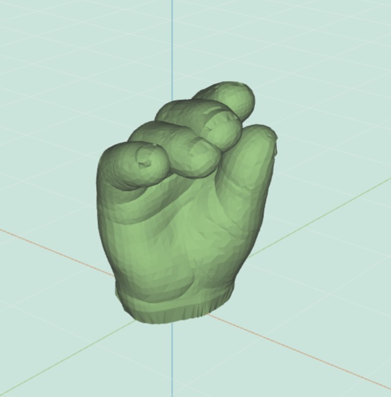Here the hand is deflated by .1.
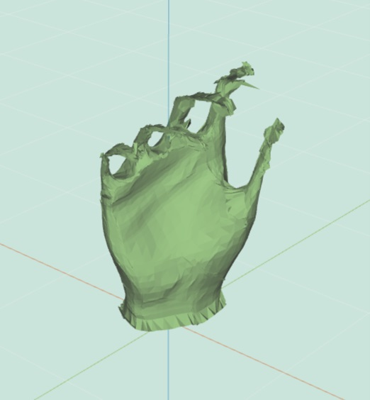Wacky
I played around with sin and cos and got this pretty cool design on large cube; when positive, it kind of does a bevel.
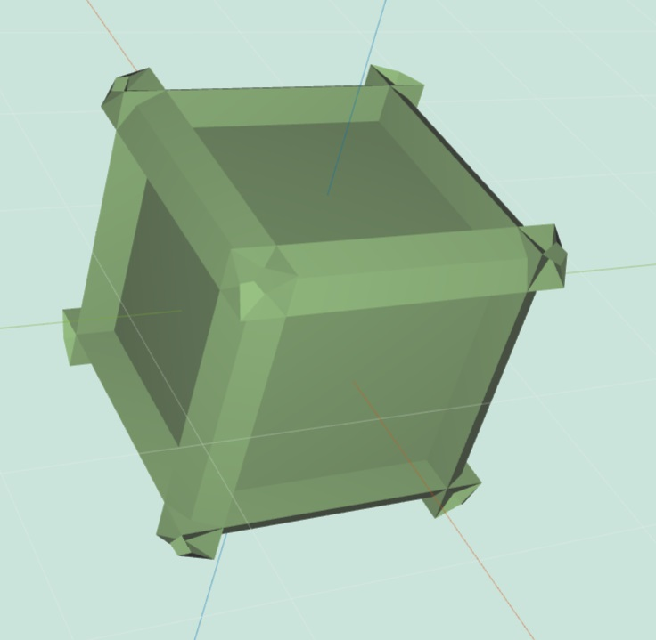 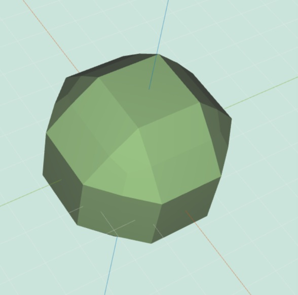Noise
Noise moves each vertex along the direction of its vertex normal a random factor.
Here is random at .5 on a large cube.
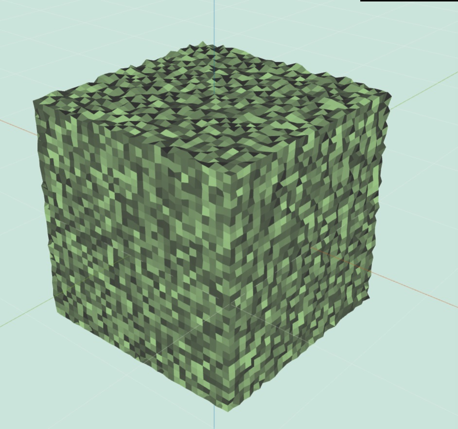Smooth
Moves each vertex to a weighted gaussian of it and its neighbors, normalized.
Here's the cheetah at smooth 5.
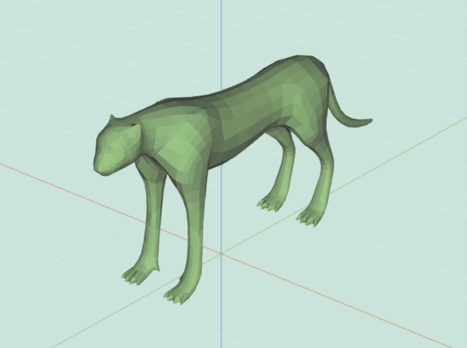Sharpen
Sharpen does the opposite of smooth, moving each vertex to the weighted gaussian of the opposites to provide greater difference in the mesh. Here's the cheetah at sharpen 2, triangulated. 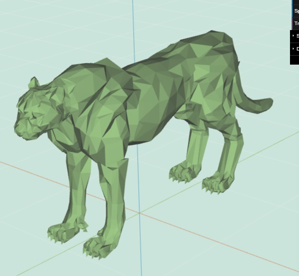
Bilateral smooth
(Your description of Bilateral smooth goes here...)
Triangulate
Triangulates each face by splitting each face every two vertices.
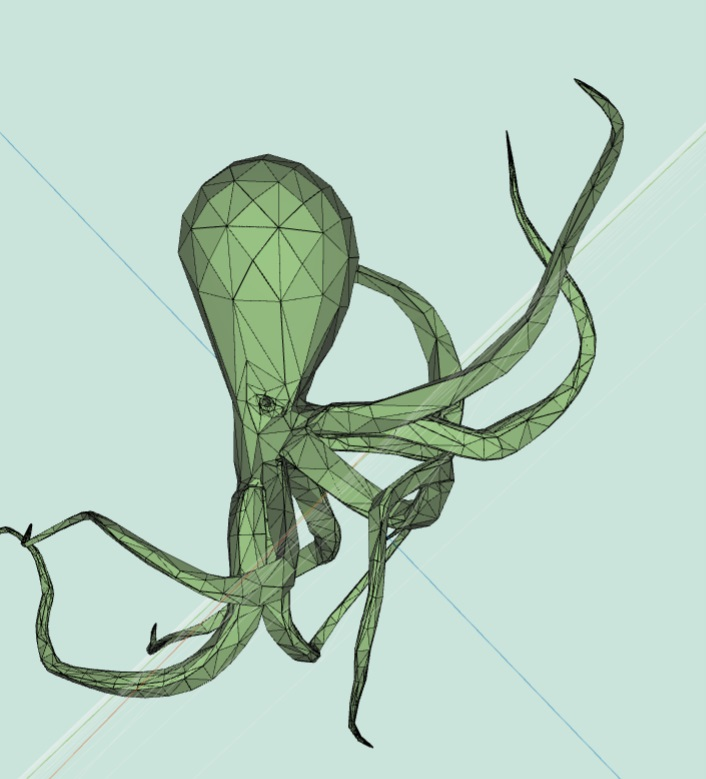Truncate
Truncate works, for the most part; something is off with the final positioning, which makes the factors a bit skewed.
Here is cube with truncate .49.
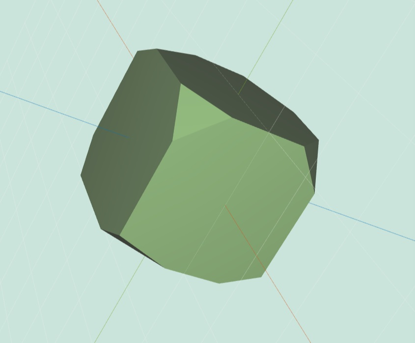Split long edges
I gave it a shot. You can see what I have here. 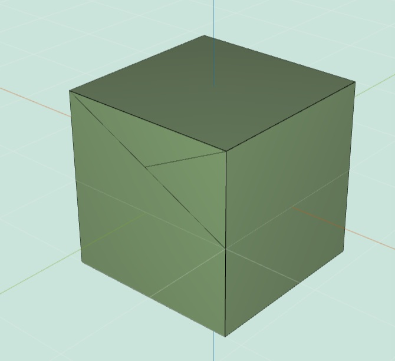
Triangle subdivision
After making sure all faces are triangles, pushes each unique edge, splits it, then splits the face (like in precept 5 notes).
Here's the hand subdivided with level 1.
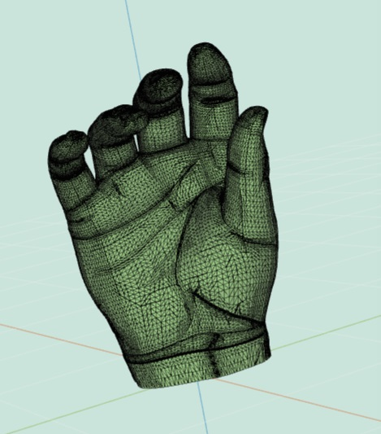Loop subdivision
Something is off with the math, which makes it skewed and then no longer working. I submitted the cube n=2 for artwork.
Here for loop = 1 (stops working after loop = 2).
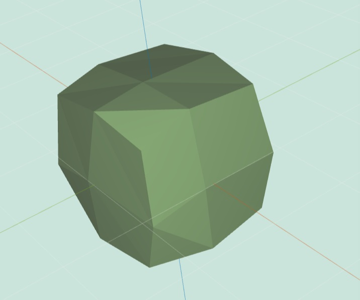Quad subdivision
First, add an edge between two edges and split the face. Connect remaining vertices to the center of the intersecting vertex, and shift the position of that vertex to be the centroid of the face. Do this for all faces.
Here is the quad subdivided at level 4.
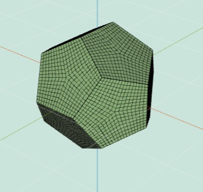Art Contest
Some artsy fails for quad subdivision and truncate.

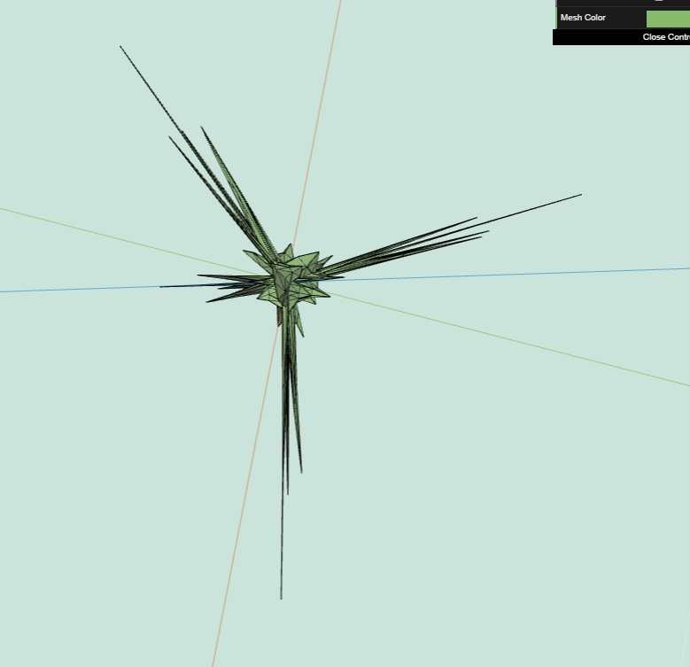